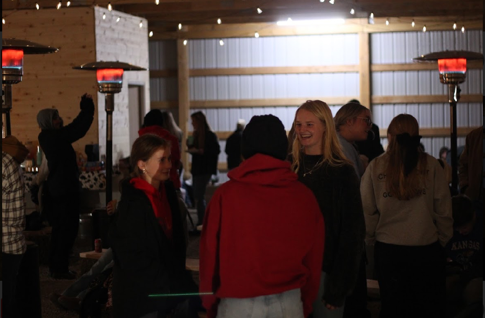

serving and leading together
Summers are a great opportunity. We want to make the most of this summer and grow closer to God, form new friendships, develop deeper community between young adults, and have a ton of fun.
Below are some details on what that will include. Join the GroupMe to stay updated on everything that goes on throughout the summer and stay connected to each other.
Once a week during summer we will gather as a large group. These night will include:

There will be an opportunity to join a small group to:
Groups will also do other fun things throughout the summer. It is a chance to stay connected throughout the summer and do life together. These people might become some of your closest freinds.
There will also be nights to have fun and enjoy fellowship together. Check out the Events page for more info.
Throughout the summer there will be opportunities to go into the community and show love to people that are hurting.
Developing servant leadership will also be a focus of the summmer. Check out the Get Involved page to see how.